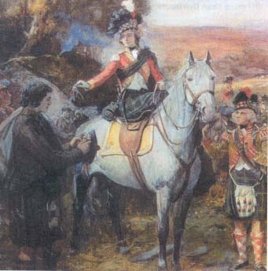
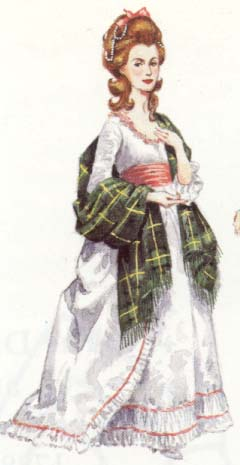

Frasers in Fiction
Jane Maxwell & Thomas Fraser

This
is a departure from traditional Fraser history, but it may help to illustrate
the fine line between fact and fiction. During
my husband’s term as Chairman of Clans & Scottish Societies of Canada, I
was “recruited” to act as editor of the CASSOC newsletter An
Drochaid. One of the newsletters of Clan Maxwell Society included the
following extract from a speech given by Sir Michael Maxwell:

"Jane
Maxwell was born at Monreith in 1749, the fourth of six children of Sir William
Maxwell, the third baronet of Monreith and his wife Magdalene Blair of Blair.
Her father, the third baronet, has been depicted as a drunk who allowed
his family to exist in poverty in Edinburgh while he sold most of his estate to
make ends meet. A fictitious novel
even suggested that he owned a whisky still at Monreith.
I have searched for it with no success!
“I
have checked some parish records of church courts of that time and found that
his character was not totally unblemished.
One entry is for a blacksmith who was found shoeing a horse on the
Sabbath, a serious crime. His
defence was that ‘Sir William Maxwell had made me do it.’ Another entry was a young unmarried girl who was found to be
pregnant, and her defence was exactly the same, that ‘Sir William Maxwell had
made me do it.’
“Lady Maxwell moved to Edinburgh in 1760 with her three daughters, Catherine aged 13, Jane aged 11, and Eglantyne aged 9. When Jane reached 16 she was strikingly beautiful and had a song written about her called Bonny Jenny of Monreith, the Flower of Galloway. She also fell deeply in love for the first and probably only time with a young officer who has been identified as probably being a Fraser, a relative of Lord Lovat. Soon after they met, he left with his regiment, probably to go to America, and word reached her that he had died.
"Alexander, the 24 year old 4th Duke of Gordon, lived in the Gordon townhouse almost opposite the Maxwells... Jane was 17 when they married on October 23rd 1767 at No. 2 Argyle Square, her elder sister Catherine Fordyce's house...
"For the next 20 years the Duke and Duchess lived at Gordon Castle in Morayshire which her husband enlarged until it was one of the largest homes in Scotland. Part of the town of Fochabers had to be demolished and rebuilt elsewhere to make way for the extensions. She had five children at two year intervals. Her first, George, Marquis of Huntly, was born in 1770. The Duke also had an illegitimate son at about the same time, also called George, by a Mrs Christie. Jane used to refer to 'my George and the Duke's George.'
"She entertained on a lavish scale with as many as a hundred guests for dinner, with some staying for three months in the Castle. In the 1780s the Duchess started entertaining in Edinburgh and quickly became the leading hostess. When the Gordons came to London in 1787, Jane continued her party giving habit, but made everyone dance Scottish dances. King George III loved her...
"In 1793 the army was short of recruits and she had a bet with the Prince Regent that she could raise more men than he. Her recruiting technique was, to say anything, unusual. She wore a military uniform and a large, black, feathered hat. She toured Scotland going from market place to market place organising reels. Anyone who joined the reel, joined the army, and received the King's shilling, the recruiting payment, from between the Duchess's lips by kissing her. This was how the Gordon Highlanders were founded. Her total was 940 men.
"In 1799 she became depressed and ill. Her eldest son, George, had gone off to the wars. Her second son, Alexander, died aged 23, and her husband had now moved his friend Jean Christie into Gordon Castle and built a small house on the Spey called Kinrara for his estranged wife, who lived there for the next six years..."
Jane, 4th Duchess of Gordon died in 1812 in London, surrounded by her four daughters and surviving son George, who would become the 5th and last Duke of Gordon.
According to Epitaphs & Inscriptions from Burial Grounds & Old Buildings in The North-East of Scotland, by Andrew Jervise (Edinburgh: Edmonston and Douglas, 1875, pp. 12-13):
"Jean
Christie, 'fifth Duchess of Gordon,' was a woman of humble birth and parentage,
who resided in Fochabers. Her good looks and handsome person fascinated
Duke Alexander long before the death of the fourth Duchess, the Lady Jane
Maxwell; and probably not the least romantic part of Jean Christie's history is
that almost at the very moment of her being united to a man in her own station
of life, a carriage drove to the door of the cottage, where the marriage party
was assembled, and Jean was abducted and carried off from her betrothed.
She bore nine children to Duke Alexander, to whom, 'after proclamation on three
several Sabbaths,' she was married 'on the 30th day of July 1820, by the Rev.
William Rennie, minister of the parish of Bellie.' According to the Bellie
Register of Burials, 'Jean Christie, Duchess of Gordon, Second Wife to
Alexander, Fourth Duke of Gordon,' was interred at Bellie upon the 2d August
1824, 'aged 54 years.' Her body was laid in a vault, under a handsome
mausoleum of Elgin freestone, with canopy, supported by twelve pillars.
Her name is not recorded; but the following, upon a marble slab, relates to her
son Adam, whose remains were laid beside his mother..."

“I
will always love you, Thomas Fraser, that is my curse.”
Jane
Maxwell can remember no time when he was not at her side. Their wild childhood
pranks through Edinburgh’s cobbled streets scandalized the city; when Jane
grows to womanhood, he is the only man she wants. Then Thomas is reported killed in the American colonies, and
a distraught Jane responds to handsome, enigmatic Alexander, Duke of Gordon -
possessor of one of Scotland’s proudest titles - whose skilled loving lights a
fire in her blood even as she rebels at his fierce will to claim her.
But Thomas Fraser is not dead, and he comes back to find his Jane an
elegant bride…
Several
summers have passed since I first read Ciji Ware’s historical novel that
purported to chronicle Jane Maxwell’s love for Thomas Fraser, presumed to have
been the son of a non-existent Sir Thomas Fraser of Struy (d 1747) and a godson of Lieut.-Colonel (later Lieut.-General) Simon
Fraser of Lovat (1726-82), eldest son of Simon Fraser, 11th Lord
Lovat executed in 1747.
The
most obvious clue lies in the Author’s Note:
“The
life of Jane Maxwell, on which the novel Island
of the Swans is based, has never been examined in depth by any serious
scholar… My goal has been to
combine the facts that are known from the written record about Jane Maxwell with
intelligent supposition about what is not
known… Although great effort
has been invested in weaving accurate research into the novel concerning the
linkages between the Gordon and Fraser clans, Jane Maxwell, and the period in
which she lived, several minor chronological shifts and time condensations were
made for dramatic purposes within this work of fiction…”
The
author almost succeeds in convincing her readers to accept the fictional Thomas
Fraser (b 1747), supplemented by her
genealogical charts of the real Frasers of Lovat and Maxwells of Monreith, and
the pedigree of Jane Maxwell (1749-1812), married (1767) to Alexander, 4th Duke of Gordon (1743-1827), son of Cosimo George,
3rd Duke
(1721-1752), son of Alexander, 2nd Duke by Henrietta Mordaunt.
After all, even the most critical researchers of Fraser history would
know that Alexander, Marquis of Huntly, later Duke of Gordon, had married (1706)
Henrietta Mordaunt; her uncle was Sir Peter Fraser and her grandfather was Sir
Alexander Fraser, physician to Charles I and Charles II.
Sir Alexander Fraser was descended from Alexander, illegitimate son of
Sir Alexander Fraser of Cowie & Durris.
[see Clan Fraser Society of Canada web page - Natural Son]
The
real Thomas Fraser of Struy, commissioned Captain in the 2nd Highland
Battalion or 63rd Regiment of Foot on 16th January 1757,
was on Army Lists for 1757 and 1758, but not later [following the siege of
Louisbourg] in the renumbered 78th Regt., or Fraser’s Highlanders.
He probably died after 10th August 1758 when Colonel Simon
Fraser “was reading Struy a lecture” at Louisbourg.
In a letter from New York, dated 2nd November, a family friend
writes: “Nothing has affected me
of a long time so much as the Death of my poor Struy and Simon Tynakyle, not
altogether as relations but my particular regard for their own worth.
I have not seen Col Fraser as yet nor any of his officers except Simon
Balnain son and James Fraser son of Castleheather, who got Struie’s
Company.”
Thomas
Fraser, 7th of Struy (1709-1758) married Lilias Chisholm of Comar, by
whom he had five sons and a daughter, born between 1737 and 1746.
It appears that Thomas was first succeeded by his son Alexander (1740-98)
who died unmarried, who was succeeded by his younger brother Hugh (c1745-1805),
who was succeeded by his sons, Thomas (1794-c1812), Robert (c1795-1830) and Hugh
(1798-1866), all of whom died unmarried.
In
Some Fraser Pedigrees (1934) Duncan
Warrand notes:
“Thomas
Fraser of Struy, second but eldest surviving son of Hugh Fraser of Struy by his
wife, Mary Lindsay, appears in 1698 as Major Thomas Fraser, elder of Struy.
He died 2 July 1709 of an apoplexy, and was buried in the aisle of
Kirkhill Church. The name of his
wife is not known. Hugh Fraser [6th]
of Struy, eldest son of Thomas Fraser [5th] of Struy, appears as
younger of Struy in 1698. He [Hugh]
was living 18 May 1732, when he witnessed a baptism at Kiltarlity, but was dead
in or before 1736, when his son [Thomas] was of Struy.”
So,
imagine my surprise when one of the descendants, through a younger son of Major
Thomas Fraser, 5th of Struy (c1638-1709) and a younger brother of Hugh
Fraser, 6th of Struy (c1675-c1736), purchased from the Scottish documents
web site, the recently released probate account of Captain Thomas Fraser 7th
Struy (1709-1758).
“Unfortunately,
there is absolutely no information given regarding TF’s death date or the
circumstances, nor any disposition of lands or otherwise.
Just a bunch of pounds, shillings and pence - and a continuing reference
to the 4000 merks owed to Hugh Fraser younger, father of the defunct [Thomas
Fraser] and that it was carried into the Inverness Sheriff Court and deemed to
be a legitimate debt. I think the
above wording refers to the Fox and not Col Simon Fraser, his son.
When I say the Struie’s had a long memory, I guess this unpaid debt was
a continuous source of irritation. My
guess is that it financed the Fox in France and the Fox said the check’s in
the mail.”
Described
as “Major Thomas Fraser, Elder of Struy,” he was, on 6th September 1698, along with Captain Simon Fraser of Beaufort and others, found
guilty of treason and other crimes against the State, “ravishing persons of
distinguished ranks,” to wit, the Dowager Lady Lovat, and sentenced to death
and forfeiture in absence. It was
to him that Simon Fraser, before he left for France in 1702, granted the bond
for 4000 merks, and which continued an irritating cause of dispute and
litigation between the two families for many years afterwards - until after Lord
Simon’s execution in 1747.
In
his History of the Frasers of Lovat
(1896, pp. 253-4) Alexander Mackenzie (1838-98) refers to the masterly device of
granting bonds of security to certain individuals on condition that they remain
loyal to Simon’s personal interests in his absence in France.
In effect, he granted them bonds, obliging himself personally, along with
his brother John, then his apparent heir, as cautioner, to pay them a certain
sum of money named in each case, with the shrewd proviso, that the bond was
“to stand in force upon condition the said (naming the person) stand faithful
to our interest, and no otherwise.”
It
appears that Struy, after Simon succeeded to the estates, insisted upon the
payment of the amount of his bond, but Simon strenuously resisted.
He admitted having signed the bonds, but pleaded that he was at the time
under an insane and criminal hallucination, tempting him to commit treason
against his lawful sovereign and to support the cause of the Pretender, urging
at the same time that it was impossible that a set of bonds all granted on the
same day, and to the same class of persons, could have had any other object than
a treasonable combination; and as it was the policy of the law not to enforce
obligations for the commission of crime so he should not be compelled to fulfill
any of these contracts, all entered into by him when he “was in the gall of
inequity.”
Alexander
Mackenzie quotes Simon Lord Lovat’s own petition, dated 6th February 1745, and notes that this defence was adopted and put forward at the
same moment that he was in the midst of his exertions in favour of the House of
Stuart, immediately before the Rising of 1745.
Ever
wonder why he was called Simon the Fox? J
© Marie Fraser, Clan Fraser Society
of Canada, 1998-2004. All rights reserved. Copying, transmitting, or storing
protected material by any means is forbidden, except for viewing the material
from specifically licensed sources, unless express, specific permission is
supplied by the copyright holder.